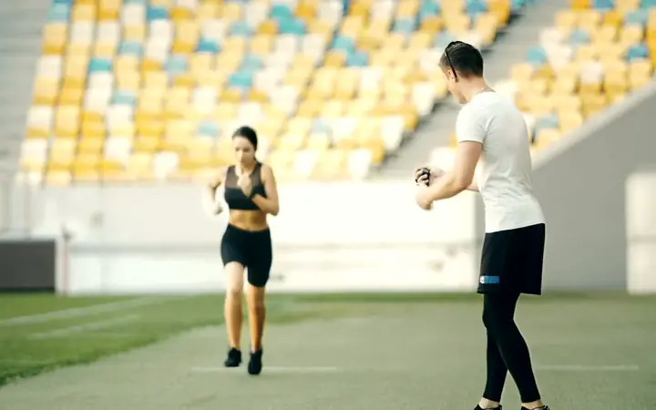
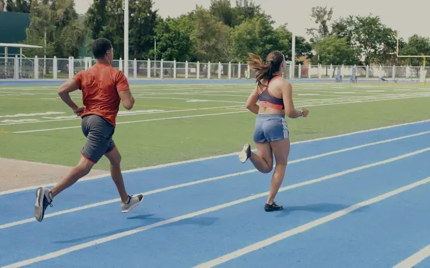

Apps de performance
- Feito para
- O aluno, sozinho
- Papel da IA
- Prescreve direto ao aluno
- Acompanhamento
- Depois do treino
Plataforma de treino guiado
O Arco conecta personal trainers e alunos: treinos com apoio da IA, acompanhamento ao vivo e evolução medida em números.
Agachamento livre
Afundo búlgaro
3×1012kg60s
Substitui o leg press: Rafael treina em casa às quintas.
O que é o Arco
Uma plataforma de treino guiado que liga quem orienta, quem treina e a IA que calcula o caminho.
Calcula a curva: propõe treinos e cargas a partir dos dados.
Traça a direção: revisa, ajusta e aprova.
Percorre o caminho: treina, registra o esforço e evolui.
Funcionalidades
Para o profissional montar e acompanhar. Para o aluno treinar com clareza.
Treino, carga e volume propostos a partir do histórico de cada aluno.

Veja quem está treinando, em que série e em que zona cardíaca.

Carga, volume e frequência semana a semana, com conquistas sem exagero.
PSE ao fim de cada série. Dor relatada com um toque, alerta na hora.
Relógios e cintas cardíacas, com zonas de Z1 a Z5 nas cores que os wearables já usam.
Agenda, biblioteca de exercícios, mensagens e relatórios em um só lugar.
Como funciona
Avaliação, objetivo e rotina de cada aluno viram o ponto de partida.
Pronto para a proposta da IA
Treino, carga e volume propostos com base no histórico. Você revisa, ajusta e publica.
Experimente: aplique, edite ou descarte a sugestão.
Agachamento livre · Rafael
Base: 3 últimas sessões com PSE até 6 e técnica marcada como “boa” por você.
Sugestão descartada.
Nada foi enviado ao Rafael. A IA considera a sua decisão nas próximas propostas.
Nada ainda. O aluno só recebe o treino depois da sua aprovação.
Agachamento livre · 4×8 · 62,5 kg · montado por Carla com apoio da IA
Séries, esforço e relatos chegam ao vivo. A evolução aparece em números.
Treino concluído. 18 séries em 42 min.
Acompanhamento
A proposta de treino chega pronta para revisão.
A sala ao vivo mostra quem precisa de você agora.
Tudo o que chega ao aluno leva o seu nome.
Quem enxerga a própria evolução tem motivo para continuar.
Bom dia, Carla.
12 alunos treinam com você esta semana.
Sala ao vivo
Treino do dia, cargas e descanso em uma tela.
Toda mudança vem explicada e assinada pelo profissional.
Sentiu dor? Um toque e o profissional é avisado.
Número em vez de adjetivo, semana a semana.
Hoje
Oi, Rafael.
A Carla preparou seu treino de hoje.
CAPor Carla · montado com apoio da IA
Evolução
Treino concluído
18 séries42 minPSE 7
Diferenciais
O Arco ocupa o espaço entre os dois: a relação entre quem orienta e quem treina.
Feito para ser lido no meio da série
Demonstração
Veja o Arco montar a primeira proposta de treino para um aluno seu, com você no comando.
Vamos escrever para o e-mail informado para combinar o melhor horário. Até lá, separe um aluno para usarmos de exemplo.
Perguntas frequentes
Na demonstração, mostramos tudo com os dados de um aluno seu.
Agendar demonstraçãoNão. A IA propõe; o profissional revisa, ajusta e aprova. O aluno só recebe o que tem o seu aval, assinado por você, com a nota “montado com apoio da IA” nos detalhes.
Na avaliação, no objetivo e na rotina do aluno, no histórico de cargas e na percepção de esforço (PSE) de cada série. Cada sugestão mostra essa base em uma linha.
Sim. No modo execução, as séries ficam salvas no celular e são enviadas assim que a conexão volta.
O Arco nasce em português, no Brasil, com expansão prevista para a América Latina em espanhol.